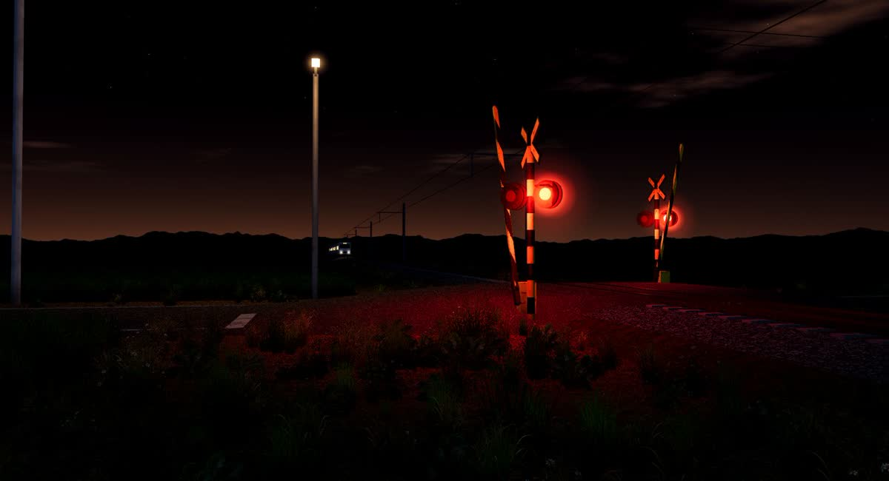
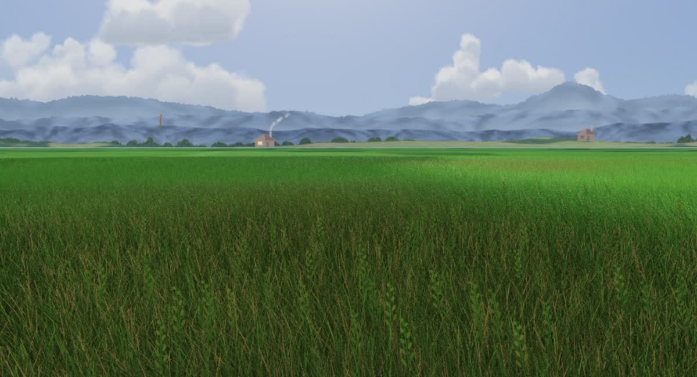

VibingWrapper is a live wallpaper for Windows that follows your Claude Code and Codex sessions. Bells ring while it thinks, the train rolls by while it works, and you know what your AI is doing without switching windows.
Your coding agent fires hooks as it works. The wallpaper turns each one into something you can catch from the corner of your eye.
The Weather theme is just the sky, following the real sunrise and sunset.
Running several sessions? Up to five are tracked at once, and the sky shows whichever needs you most.
A small boat trails its wake across the open sea. When your agent gets to work, a squid dozens of times its size rises to the surface, its eye right beside the hull.
Browse, download and switch themes from the gear menu's built-in theme library.


A theme is just a folder: a theme.json plus a web page. Copy one, change the name, and it shows up in the menu.
One click in the gear menu adds a few hooks to Claude Code or Codex. Each hook sends a tiny event to the app on your own computer.
Works with Claude Code (CLI, or the Code tab in Claude Desktop) and Codex. Regular Claude Desktop chats have no hooks, so the wallpaper won't react to them.
Windows 10 or 11. No Node.js needed.
Paste this into Claude Code or Codex. It checks the code for security concerns, then installs only once you agree.
Install VibingWrapper (https://github.com/youllook/VibingWrapper) for me: a Windows live wallpaper that follows Claude Code / Codex. 1. Clone it into a folder I choose (ask me if I haven't said). Before installing, do a security review and sum it up in a few sentences: - which local port it opens, what data it receives, whether it talks to any outside server - which files it writes (especially the hooks it adds to ~/.claude/settings.json and ~/.codex/hooks.json) - anything suspicious in package.json dependencies or install scripts 2. Once I agree, run npm install and npm start, and npm run shortcut for a desktop shortcut. 3. Ask me to click the gear (top right) → Settings → "Connect Claude" (and "Connect Codex" if I use Codex) to add the hooks, then tell me which sessions to restart. Note: this only works with Claude Code (CLI, or the Code tab in Claude Desktop) and Codex; plain Claude Desktop chats have no hooks, so the wallpaper won't react.
幫我安裝 VibingWrapper（https://github.com/youllook/VibingWrapper），一個跟著 Claude Code／Codex 狀態變天的 Windows 動態桌布。 1. 先 clone 到我指定的資料夾（沒指定就問我），安裝前先做資安檢查，把結論用幾句話告訴我： - 它會在本機開什麼 port、收什麼資料、有沒有連到外部網路 - 它會寫哪些檔案（尤其是 ~/.claude/settings.json、~/.codex/hooks.json 的 hook 內容） - package.json 的相依套件與 install script 有沒有可疑的地方 2. 我同意之後再 npm install、npm start，並用 npm run shortcut 在桌面建捷徑。 3. 請我點右上角齒輪 →「Claude 連動」（有用 Codex 的話也點「Codex 連動」）裝 hook，然後告訴我要重開哪些 session。 注意：連動只對 Claude Code（CLI、Desktop 的 Code 分頁）和 Codex 有效，Claude Desktop 的一般對話沒有 hook，不會變天。
It's free and open source. Feedback, issues and new themes are very welcome.